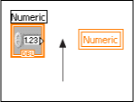

A local or global variable reference on the block diagram is not wired to anything. This might cause the VI to behave incorrectly. In the following example, a local variable is not wired.
To correct this error, you must wire the variable or delete it from the block diagram. To find the variable that is causing the problem, click the Show Error button in the Error list window.